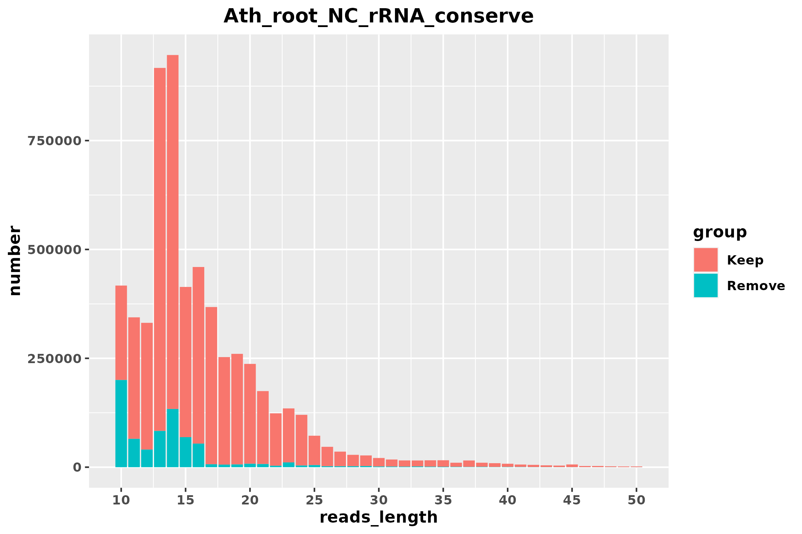
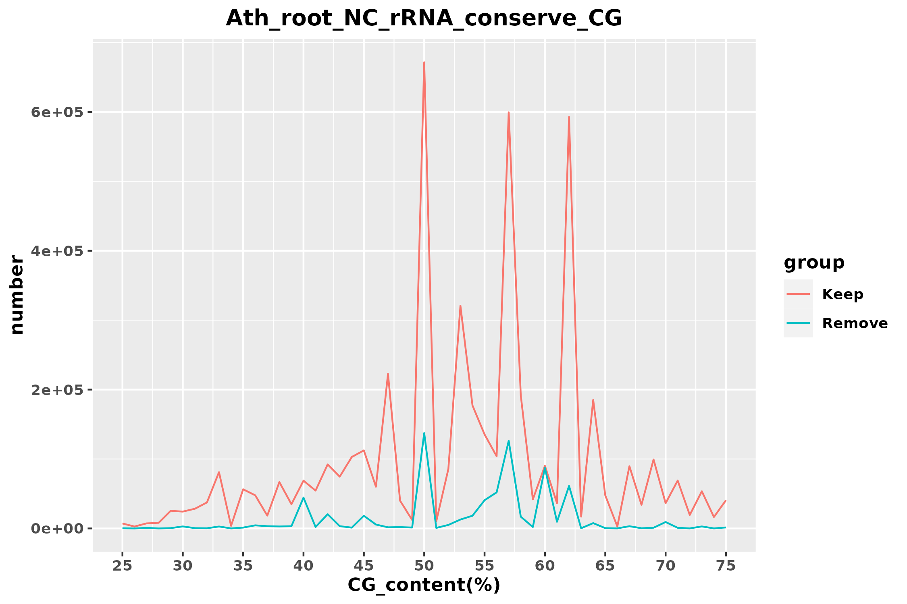
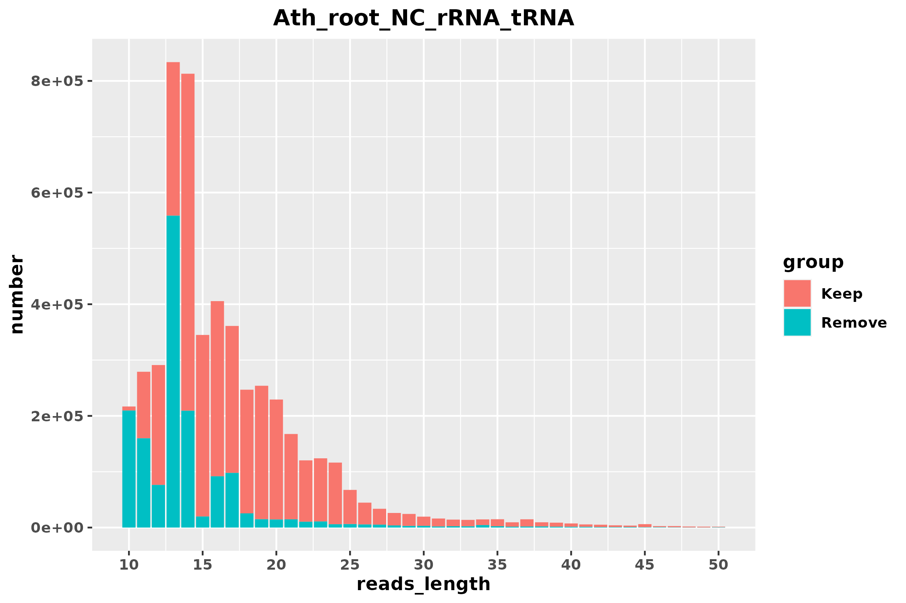
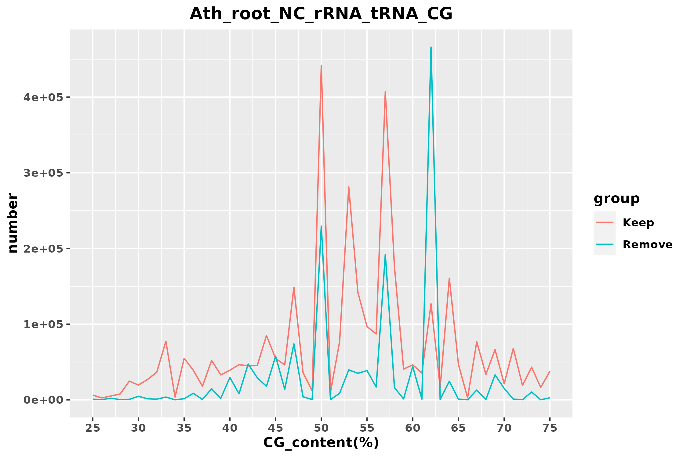
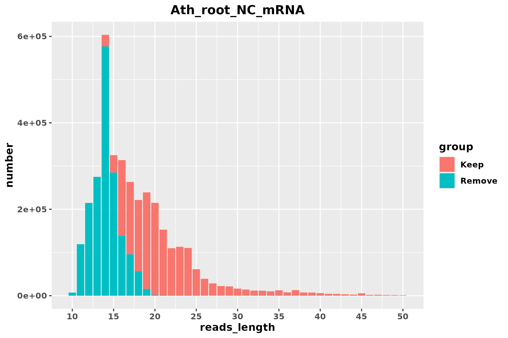
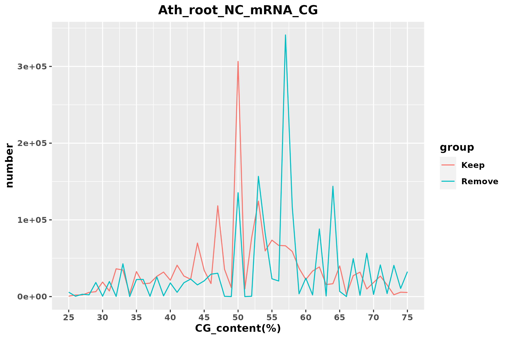

| Stage | reads | proportion | rRNA_align_rate | mRNA_align_rate |
|---|---|---|---|---|
| raw | 5939474 | 100.00% | 63.93% | 71.75% |
| Stage | reads | proportion | rRNA_align_rate | mRNA_align_rate |
|---|---|---|---|---|
| rRNA_conserve_keep | 5213602 | 87.78% | 62.41% | 69.24% |
| rRNA_conserve_remove | 725872 | 12.22% | 74.87% | 89.74% |


| Stage | reads | proportion | rRNA_align_rate | mRNA_align_rate |
|---|---|---|---|---|
| rRNA_tRNA_keep | 3637249 | 61.24% | 65.80% | 62.32% |
| rRNA_tRNA_remove | 1576353 | 26.54% | 54.56% | 85.21% |
| Organism_name | name | Total_reads_number | Match_reads_number | Match_proportion | Bacteria_CG_content_rRNA_tRNA | Average_CG_content | Average_reads_Length |
|---|---|---|---|---|---|---|---|
| Actinomyces oris | Actinomy_oris_GCF_016127955_1 | 5939474 | 558200 | 9.40% | 58.07% | 51.561% | 15.03 |
| Chloracidobacterium thermophilum B | Chlo_thermophilum_B_GCF_000226295_1 | 5939474 | 436558 | 7.35% | 56.83% | 61.391% | 12.95 |
| Adlercreutzia equolifaciens DSM 19450 | Ad_equol_DSM_19450_GCF_000478885_1 | 5939474 | 388451 | 6.54% | 62.31% | 63.516% | 12.73 |
| Slackia heliotrinireducens | Sl_heli_GCF_900637575_1 | 5939474 | 386033 | 6.50% | 62.98% | 63.517% | 12.73 |
| Raoultibacter timonensis | Raoulti_tim_GCF_022845715_1 | 5939474 | 383484 | 6.46% | 57.23% | 63.413% | 12.72 |
| Treponema pallidum subsp. pertenue str. SamoaD | Tre_palli_pertenue_SamoaD_GCF_000246755_1 | 5939474 | 383027 | 6.45% | 54.35% | 63.285% | 12.73 |
| Phoenicibacter congonensis | Phoe_congo_GCF_900169485_1 | 5939474 | 383024 | 6.45% | 55.73% | 63.424% | 12.73 |
| Rickettsia canadensis str. CA410 | Ric_canad_CA410_GCF_000283915_1 | 5939474 | 358405 | 6.03% | 49.77% | 61.204% | 12.89 |
| Rickettsia typhi str. TH1527 | Ric_typ_TH1527_GCF_000277285_1 | 5939474 | 356484 | 6.00% | 49.22% | 61.172% | 12.90 |


| Stage | reads | proportion | rRNA_align_rate | mRNA_align_rate |
|---|---|---|---|---|
| mRNA_keep | 1843129 | 31.03% | 76.87% | 32.40% |
| mRNA_remove | 1794120 | 30.21% | 54.43% | 93.06% |
| Organism_name | name | Total_reads_number | Match_reads_number | Match_proportion | Bacteria_CG_content_mRNA | Average_CG_content | Average_reads_Length |
|---|---|---|---|---|---|---|---|
| Corynebacterium diphtheriae bv. mitis str. ISS 3319 | Cory_dip_bv_mitis_ISS_3319_GCF_002843135_1 | 5939474 | 887726 | 14.95% | 54.18% | 55.492% | 12.55 |
| Xylella fastidiosa Temecula1 | Xy_fast_Temecula1_GCF_000007245_1 | 5939474 | 879179 | 14.80% | 53.30% | 55.308% | 12.56 |
| Pseudomonas cannabina pv. alisalensis | Pseudom_cann_pv_alisalensis_GCF_016599635_1 | 5939474 | 865790 | 14.58% | 59.53% | 56.589% | 12.15 |
| Pandoraea sputorum | Pand_sputo_GCF_900187205_1 | 5939474 | 859079 | 14.46% | 63.50% | 56.629% | 12.22 |
| Rosistilla oblonga | Rosi_obl_GCF_007751715_1 | 5939474 | 852140 | 14.35% | 58.58% | 56.623% | 12.18 |
| Mycobacterium shigaense | Mycobacteri_shiga_GCF_002356315_1 | 5939474 | 840727 | 14.15% | 67.66% | 57.561% | 12.26 |
| Ralstonia insidiosa | Ral_insi_GCF_001663855_1 | 5939474 | 827537 | 13.93% | 63.62% | 56.888% | 12.22 |
| Pseudomonas frederiksbergensis | Pseudom_frederiksb_GCF_001874645_1 | 5939474 | 827413 | 13.93% | 59.27% | 56.719% | 12.21 |
| Corynebacterium renale | Cory_ren_GCF_900478035_1 | 5939474 | 822778 | 13.85% | 59.82% | 56.718% | 12.20 |

